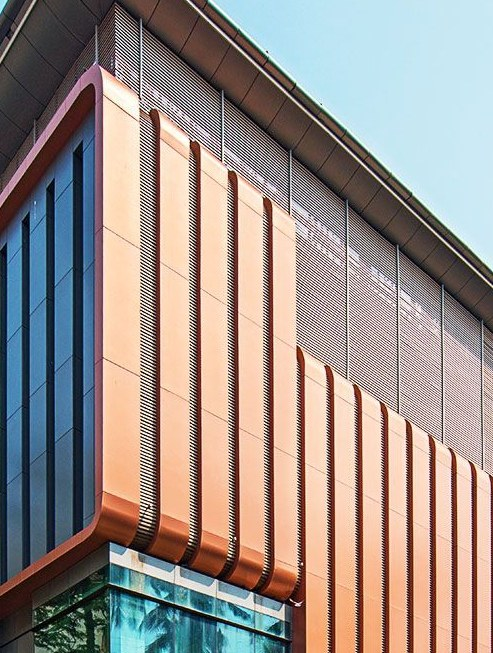

ACP – Aluminium Composite Panel
Aluminium Composite Panel or ACP sheet is a new-age material used for building front elevation (facades), interiors, signage, modular kitchens and much more. It is available in a wide range of colours and textures like wood, stone, sand, 3D etc. It can be bent, folded and turned into shapes that can't be achieved by any other material. Hence, ACP sheet allows more design liberty and is thus a designer's delight.
Available in all sizes from 3mm to 10mm (on demand)
Request a quote for ACP